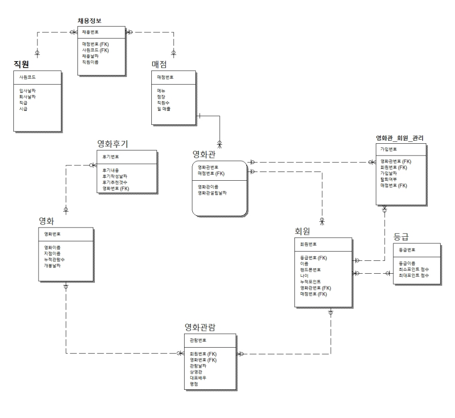

영화관 관계형 DB 모델링
* 해당 주제를 선정한 이유?
영화관의 관계 구도가 다양하다고 느꼈고 주제를 정함에 있어서 최대한
관계형 구도를 생각하여 프로젝트를 하기위해 노력함.
* 느낀점
개발기간은 3일 이였고, ER_WIN프로그램을 사용하는 방법부터 설정, DB를
설계하는 것까지 서툴렀지만
데이터 베이스 관계(1:1, 1:N, N:M)를 이해하는데 조금 더 중점을 두고 설계.
* 보완점
관계형 DB의 이해도가 아직 미숙하여 간단한 DB설계는 가능하지만 관계구도의
이해도를 높일 필요가 있다고 느낌.
Technologies:
- - MySQL
- - ER-Win